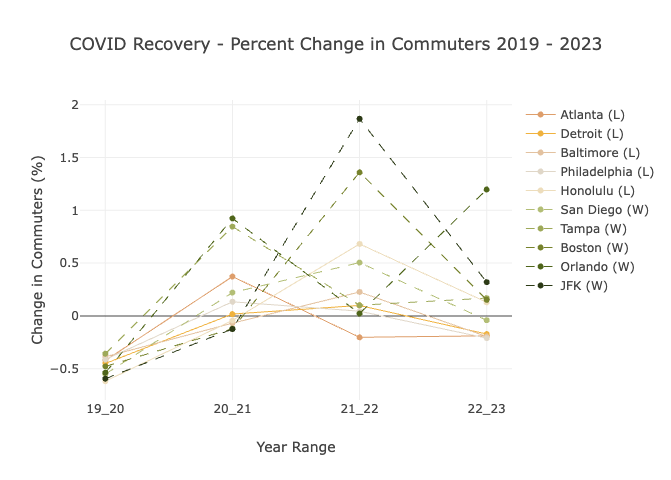
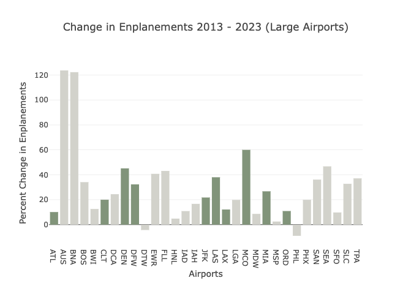
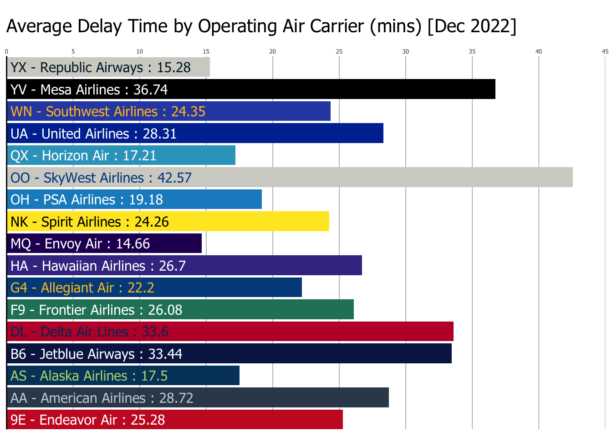
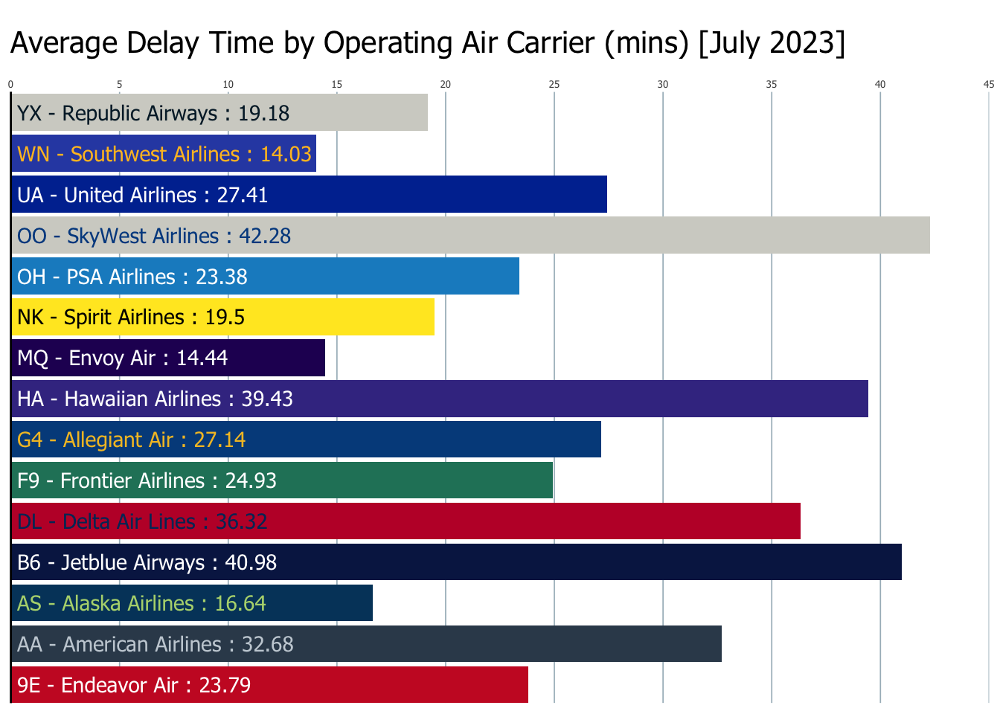
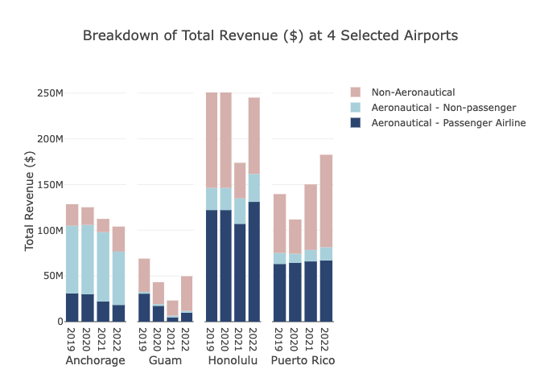
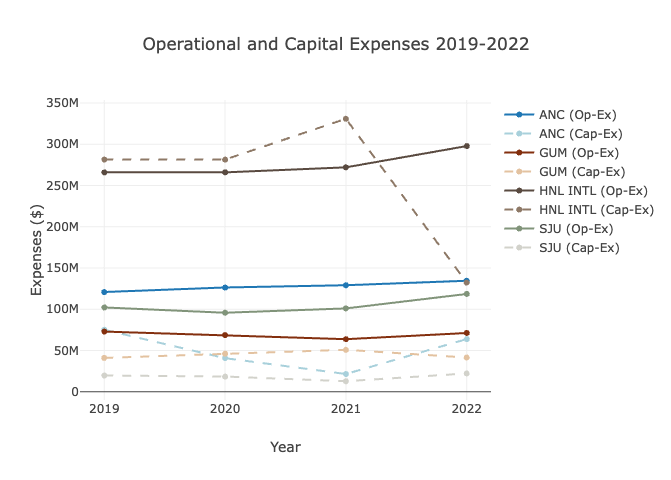
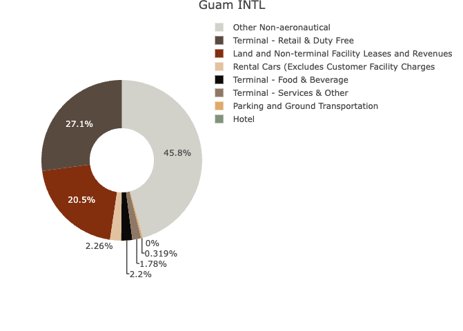
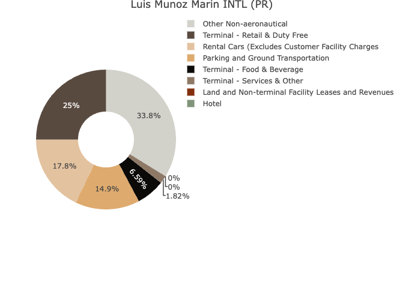

This in-class project consists of two parts. The projects was completed using R-Studio and knitted into HTML page. Click the right side to access the full report.
Part A consists of analysis of FAA and BTS data about airport operations,
including number of commuters, enplanements, specific flight information over time, and much more.
While it is very hard to define ‘winning’ and ‘losing’ in aviation, this section aims to approach such examination through
three lenses – 1) Most recent operation data (best present performance as winning),
2) Increasing commuters and enplanements over years , and
3) Less delays or cancellation as winning.
This section also calls highlight to two topic of my personal interest – COVID’s impact on airport
and Air Carrier’s delay stats.




The second part analyzes data about financial planning and budgeting at airports from FAA’s CATS (Certification Activity Tracking System) at four airports.
Several major airports on non-contiguous U.S. territories are selected for this section, which means they are relatively isolated from most of the U.S. States and they usually heavily rely on air transportation to build connections, transporting resources, and bring in visitors. In particular, I am curious to learn more about Ted Stevens Anchorage International Airport in Alaska, Daniel K. Inouye International Airport in Honolulu, Antonio B. Won Pat International Airport in Guam, and Luis Munoz Marin International Airport in Puerto Rico.
The four airports of choice are categorized as different size hubs by FAA – Honolulu Airport being a large, PR and AK being medium, and Guam being small. It is interesting to compare different aspects of those airports’ finance given their similar reliance on air transportation but at different capacities.



